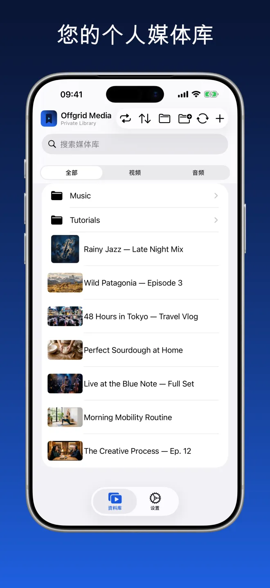
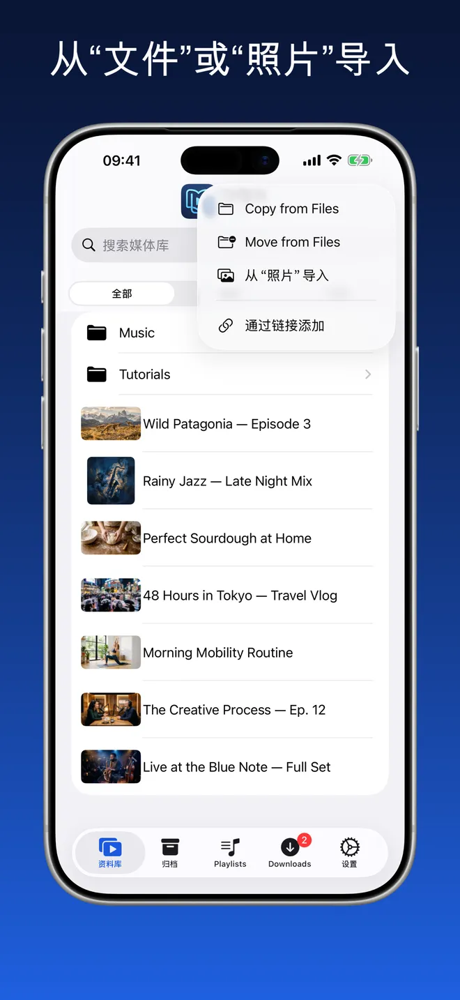
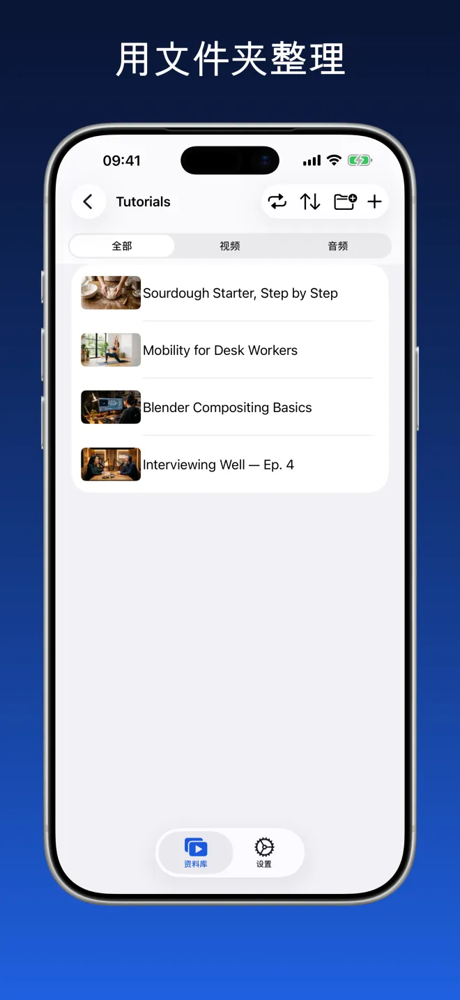
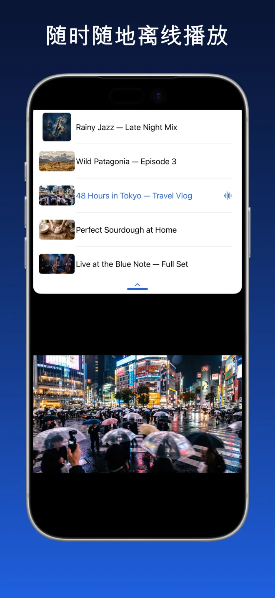
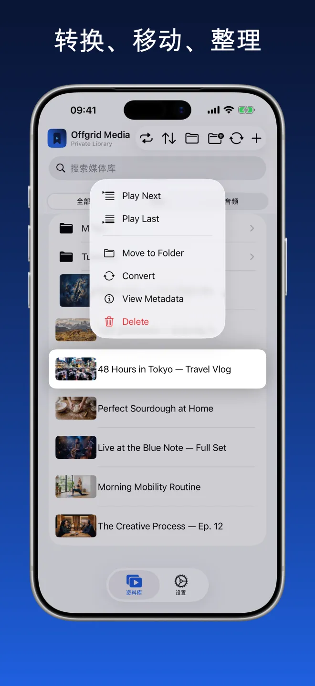
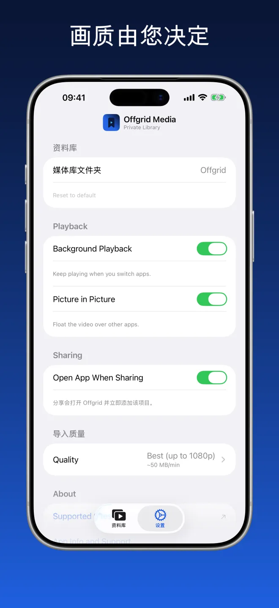

Offgrid Media · 私人媒体库
您保存的一切，
离线可用。
把您已经拥有的视频和音频带进来 — 从“文件”、从“照片”，或者通过您有权保存的链接 — 然后在一个整洁的地方离线播放它们。
试试看。网络已断开，您的媒体库照常播放。

属于您自己的媒体，一个整洁的去处
文件夹、搜索，以及按视频或音频筛选。缩略图取自文件本身，封面和元数据都会保留。





导入、整理、播放
从“文件”或“照片”导入
用文件夹整理
随时随地离线播放
一个真正的播放器，而不只是一堆文件
下面的一切在断网时同样可用。
从“文件”和“照片”导入
从 iCloud Drive、您的设备或照片图库添加视频和音频。所有内容都会进入您的媒体库，随时可以播放。
按您的方式整理
创建文件夹、在文件夹之间移动项目，并在您保存的所有内容中搜索。想要专注时，可按视频或音频筛选。
为离线而生
一旦进入媒体库，内容就留在您的设备上。没有缓冲，不需要联网，也不会从任何地方串流。
一个真正的播放器
顺序播放或随机播放，从上次停下的地方继续，排好接下来要播的内容，并在使用其他应用时以画中画继续观看。封面和元数据都会保留。
后台音频
切换应用或锁屏后依然继续播放。
选择您的画质
在设置中一次性选定偏好画质 — 最佳可用、720p、480p、360p 或仅音频。
章节
带章节的媒体会在媒体库中显示章节列表，并在播放器底部显示章节栏，让您直接跳到想看的部分。
整个文件夹，一次导入
导入文件夹时，其子文件夹结构原样保留 — 可以复制，也可以从原位置移动。一次选择多个项目，即可加入播放列表、归档、移动或删除。
只保留您需要的
在设置中关闭“归档”或“播放列表”，它们就会从应用中消失。不会删除任何内容 — 重新打开后，一切依然在那里。
无需账户。没有广告。不做追踪。
Offgrid 将所有内容保存在您的设备本地。不上传、不共享，也不需要任何账户。
无从收集，因为根本没有可发送的去处
Offgrid Media 没有账户，也没有自己的服务器。它在 App Store 的隐私清单声明：不做追踪，不收集任何数据类型。
常见问题
不需要。内容一旦进入媒体库，就保存在您的设备上，断网也能播放。播放时不会串流任何内容，因此没有缓冲，也不存在会中断的连接。
保存在您设备上的一个文件夹中，位于应用自己的存储空间内。您可以在设置里另选媒体库文件夹；由于应用支持 iOS“文件”App，您也可以在那里浏览同样的文件。不会上传任何内容，也没有云同步。
从“文件”导入（iCloud Drive 或本机）、从照片图库导入，或通过您有权保存的链接添加——将链接粘贴到应用内，或在浏览器中点“共享”并选择 Offgrid Media。导入是主要方式；通过链接添加只是次要的便捷途径。
可以。在设置中开启后台音频后，切换应用或锁屏时播放会继续，锁定屏幕和控制中心会显示标题、封面和播放控制。视频还能通过画中画悬浮在其他应用之上。视频也可全屏播放，在 iPad 上还能通过分屏（Split View）与另一个应用并排继续播放。
不会。Offgrid Media 没有账户、没有后端、没有分析工具，也没有第三方 SDK。它在 App Store 的隐私清单声明：不做追踪，不收集任何数据类型。它唯一请求的权限是通知。
不收费。没有订阅，没有应用内购买，没有广告。
请仅添加您有权保存的内容。遵守任何平台的服务条款以及适用法律完全是您自己的责任。
您的媒体库。您的设备。不需要信号。
Offgrid Media 免费提供，支持 iPhone 和 iPad，共 11 种语言。